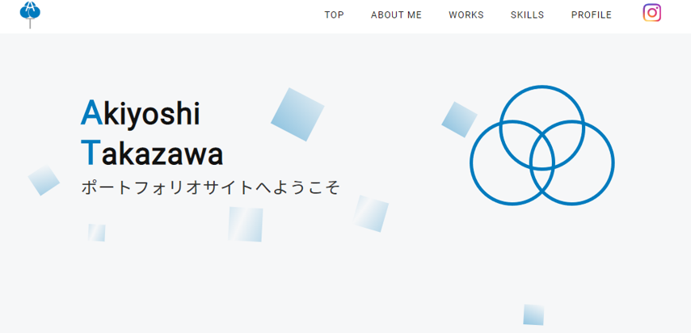
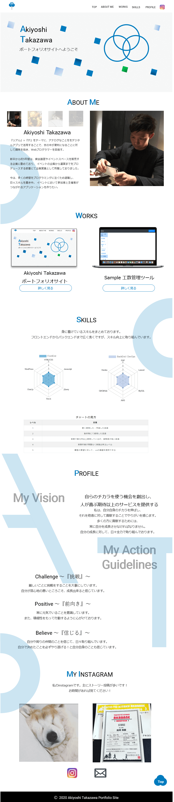
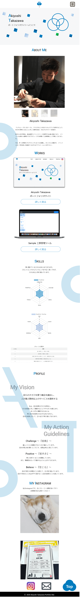

TOP
ABOUT ME
WORKS
SKILLS
PROFILE
WORKS
Akiyoshi Takazawa ポートフォリオサイト

制作目的
プログラミングスキルや人柄を知ってもらい、自分に興味を持っていただくためのサイト
制作目的
HTML/CSS.jQuery.chart.js.php
Git/GitHub.AWS(EC2).Heroku
photoshop
ターゲット
IT企業の人事の方や現場担当者がメインターゲット。メインターゲットは、時間がない中多くの応募者を見る。情報が目まぐるしく変わる業界なので、最先端なことが好き。現場担当者は細かなところまで確認する気質。
与えたい印象や構成
短い時間で、なにが出来るのか出来ないのかを知ってもらうため、ページ構成は1枚で対応。また、アニメーションは少なくし、シンプルにする。
スキル以外でも自分の人柄を知ってもらい、どのような人なのかを印象づける。価値観をデザインに起こす。
最先端なこと→ハイテク。ハイテクな印象(ブルーベースの色彩をチョイス。マットな感じ。）
コンセプト
『心技体を意識し、現代の情報社会を生き抜くために常に成長する自分』3つの円は、自分の価値観を表現しております。自分は成長することが好きです。なぜなら、自分の出来ることが増えると、多くのことに貢献出来るからです。 3つの円の中心は成長を表現し、それぞれの円は、心(モチベーション)、技(スキル)、体(経験)を表し、ビジネスにおいてその3つがバランスよく成り立つことで、成長すると考えています。 情報社会は、四角で表現し、グラデーションで常に変化していることを表しております。


トップページへ戻る